La página ya está diseñada, aprobada y funcionando. Este paquete no es un diseño para interpretar: es la página terminada, cortada en 16 bloques para que la montes en WordPress uno por uno, con sus imágenes, sus tipografías y su video ya en el formato correcto.
Abre sitio-completo.html con doble clic. Eso es exactamente lo que tiene que
quedar publicado: mismo orden, mismos textos, mismos colores, mismas animaciones. Si en algún
momento dudas de cómo va algo, la respuesta está ahí.
Cinco cosas y nada más. No hay archivos de trabajo, ni versiones viejas, ni material que no se use en la página.
Cada archivo de secciones/ empieza con un comentario que dice qué sección es, qué
imágenes usa y qué hay que tener en cuenta. Ese comentario puedes pegarlo igual:
no se ve en la web. Después viene el <style> de esa sección y su HTML.
Hay tres formas de publicarla. Las tres dan el mismo resultado visual; cambia cuánto trabajo es y cuánto se puede editar después desde el panel.
Una página nueva a ancho completo y 18 bloques de HTML personalizado, en orden: estilos base, las 16 secciones, y los scripts.
≈ 1 hora · se edita por bloquesUn solo bloque de HTML personalizado con el contenido completo de
sitio-completo.html.
Subir la carpeta por FTP a un subdominio (algarrobal.mascenter.cl). No hay que
tocar ninguna ruta.
Si el cliente va a querer cambiar textos o fotos desde el panel, ve por el camino A. Cada sección queda en su propio bloque, se reordena arrastrando y se edita sin tocar el resto. Los pasos 3 a 7 de este instructivo son ese camino. Para el B y el C, haz los pasos 3 y 4 y salta al 7.
Todo lo que la página necesita está en recursos/. Nada se descarga
desde un servidor externo: ni Google Fonts, ni librerías, ni CDN.
| Carpeta | Qué es | Cuánto pesa | Cómo subirlo |
|---|---|---|---|
imagenes/ |
12 fotos, el mapa y el masterplan. JPG entre 1.200 y 1.920 px de ancho. | 4,0 MB | Biblioteca de Medios |
iconos/ |
12 iconos PNG con transparencia, ~320 px. Son los de la diseñadora, no reemplazos. | 380 KB | Biblioteca de Medios |
logos/ |
Más Center blanco (SVG) y gris (PNG), Grupo IFB y el favicon 512×512. | 33 KB | Biblioteca de Medios |
video/ |
Los 2 MP4 y la imagen de portada del video. | 14,4 MB | Biblioteca de Medios (ver el paso 6) |
tipografias/ |
Poppins en 5 pesos, formato WOFF2. | 40 KB | Por FTP, ver abajo |
.svg por defecto. O
instalas Safe SVG, o subes el logo blanco por FTP igual que las tipografías. Es un solo
archivo: logo-mascenter-blanco.svg..woff2. Tampoco están permitidas en la Biblioteca
de Medios. Súbelas por FTP a /wp-content/uploads/algarrobal/tipografias/ y deja las
5 juntas ahí./wp-content/uploads/algarrobal/video/ o pídele al
hosting que suban upload_max_filesize a 32 MB.Sube la carpeta recursos/ completa por FTP a
/wp-content/uploads/algarrobal/ y te ahorras los tres problemas de arriba de una
vez. Queda todo junto, con los mismos nombres, y las rutas del paso 4 quedan predecibles.
Los archivos vienen con rutas relativas para que se puedan abrir en el computador. En WordPress hay que apuntarlas a donde quedaron los recursos.
Abre los archivos de secciones/ en un editor de texto y haz un
buscar y reemplazar antes de pegar:
Si vas por el camino B (todo de una), el prefijo es recursos/ sin los dos puntos,
porque sitio-completo.html está un nivel más arriba:
Después del reemplazo, una ruta cualquiera tiene que verse así:
Las tipografías se llaman desde el CSS con url('../recursos/tipografias/…'), dentro
de 00-estilos-base.html. El buscar y reemplazar también las arregla — pero si el CSS
lo pegas en Apariencia → Personalizar → CSS adicional, revisa que esas cinco rutas
quedaron absolutas, porque desde ahí una ruta relativa apunta a la carpeta del tema y las
tipografías no cargan.
La landing trae su propia cabecera y su propio pie. Si además se muestran los del tema, quedan dos menús y dos footers.
Este es el trabajo. Un bloque de HTML personalizado por archivo, en este orden exacto. Cada archivo se pega completo, tal como está, sin sacarle nada.
1. 00-estilos-base.html va primero, una sola vez. Sin él ninguna
sección se ve bien.
2. 99-scripts.html va último, una sola vez. Sin él no hay
animaciones, ni carrusel, ni menú de celular, ni ventana de video.
Logo blanco a la izquierda y menú a la derecha. Transparente sobre el hero, se vuelve negra al bajar. En celular se convierte en menú hamburguesa.
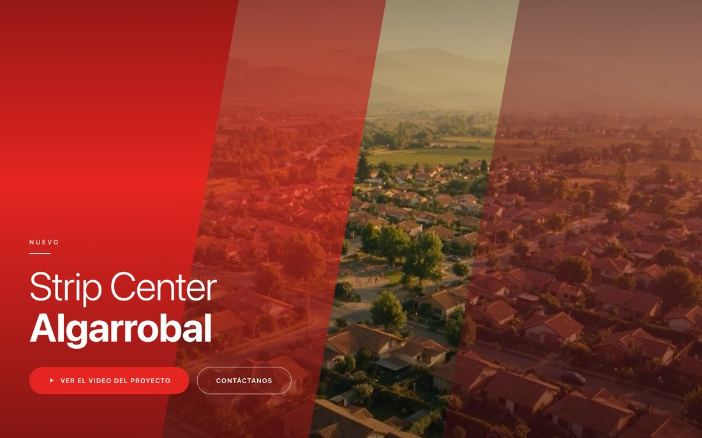
Video en bucle de fondo, las tres diagonales rojas del diseño y el titular. Los dos botones son «Ver el video del proyecto» y «Contáctanos».
hero-poster.jpg. No le pongas audio ni controles.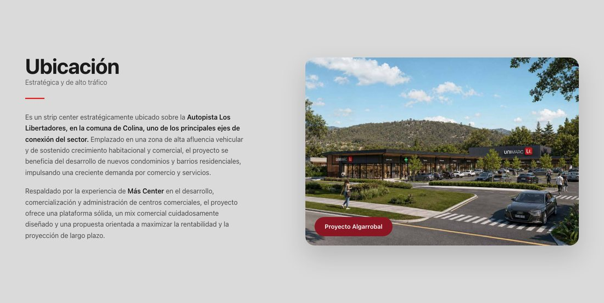
Fondo gris, dos columnas: los dos párrafos a la izquierda y la foto con la etiqueta vino «Proyecto Algarrobal» a la derecha.
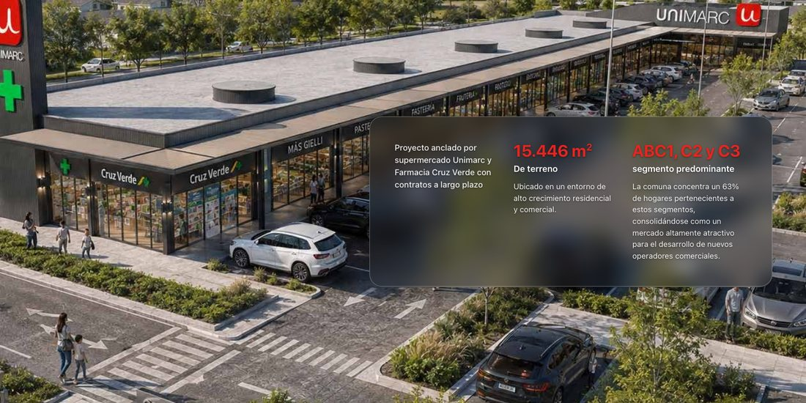
Foto aérea a todo el ancho con una tarjeta de vidrio encima: el ancla comercial, los 15.446 m² y el segmento ABC1/C2/C3.
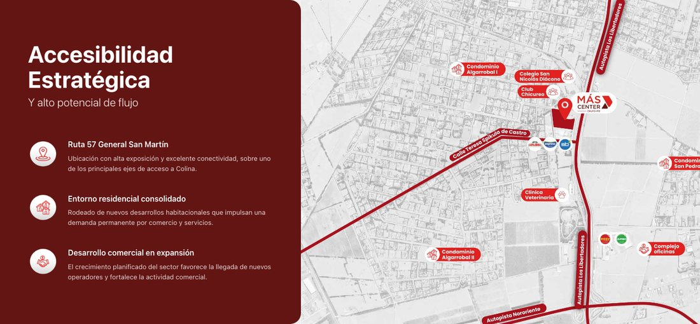
Bloque vino oscuro con tres puntos de acceso y, al lado, el mapa del entorno.
mapa.jpg), no un Google Maps
embebido. Lleva encima la gráfica de la diseñadora con los condominios, el colegio y el pin.
No lo reemplaces por un iframe de Maps.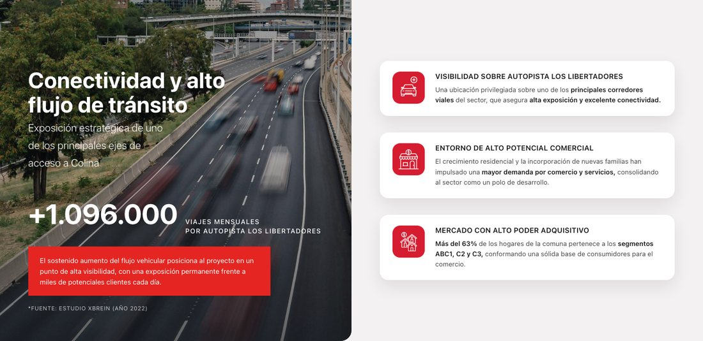
Foto de la autopista con el dato de +1.096.000 viajes mensuales y la caja roja, más las tres tarjetas blancas de ventajas.
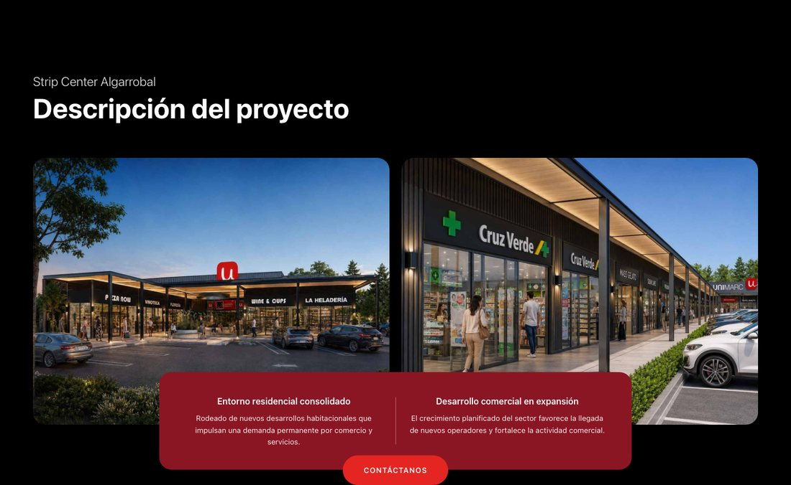
Fondo negro, dos fotos lado a lado y la caja vino montada encima con dos textos, más el botón «Contáctanos».
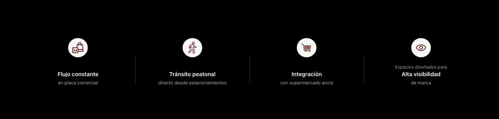
Cuatro iconos en fila sobre negro, separados por líneas verticales. En celular pasan a dos columnas y después a una.
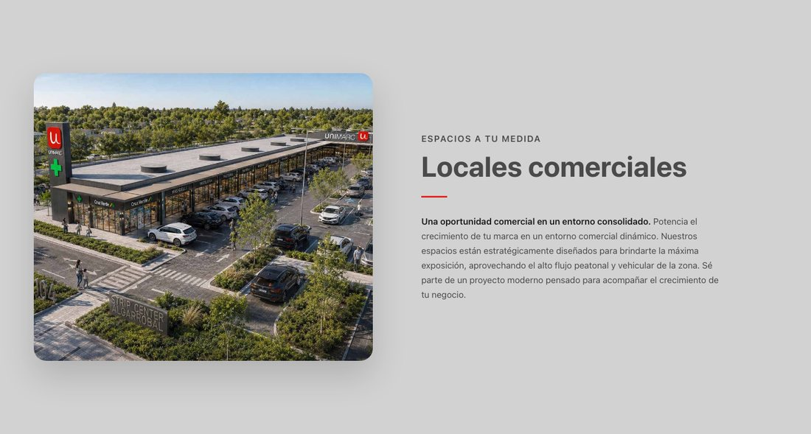
Fondo gris, foto aérea a la izquierda y el texto de venta a la derecha con el antetítulo rojo «Espacios a tu medida».
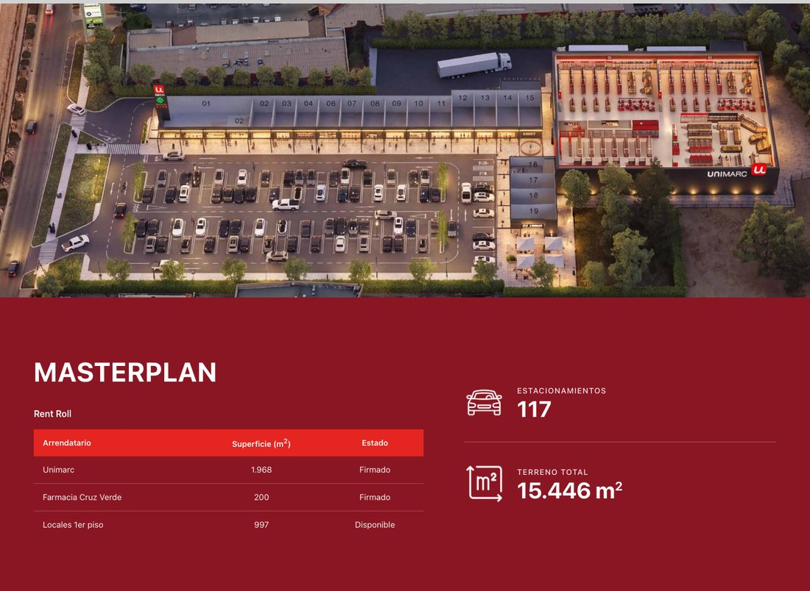
Son dos bloques seguidos: la imagen del masterplan numerado a todo el ancho y, debajo, la tabla del Rent Roll con los 117 estacionamientos y los 15.446 m².
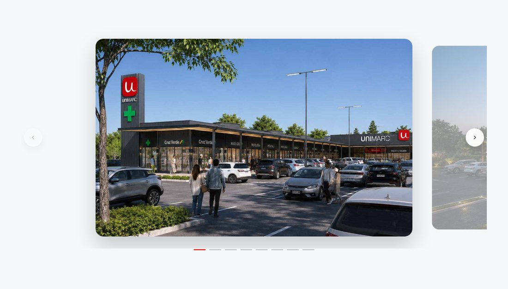
Carrusel de 8 imágenes con flechas, puntos y arrastre con el dedo o el mouse.
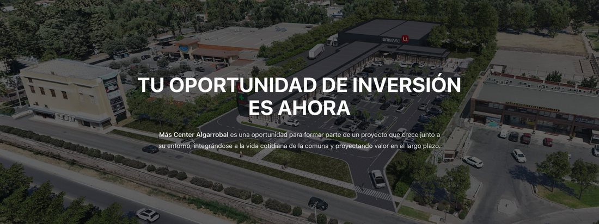
Foto aérea grande con velo oscuro, titular y párrafo de cierre. Fondo con parallax.
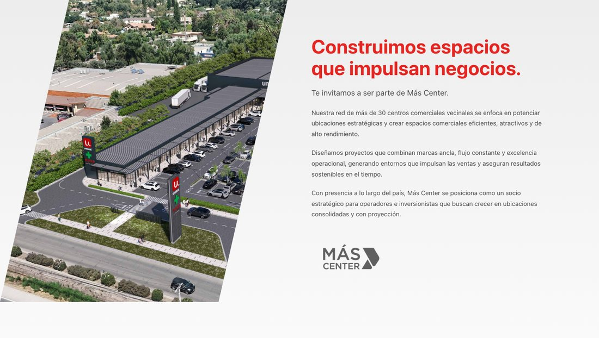
El bloque institucional de Más Center: foto recortada en diagonal a la izquierda, tres párrafos y el logo gris a la derecha.
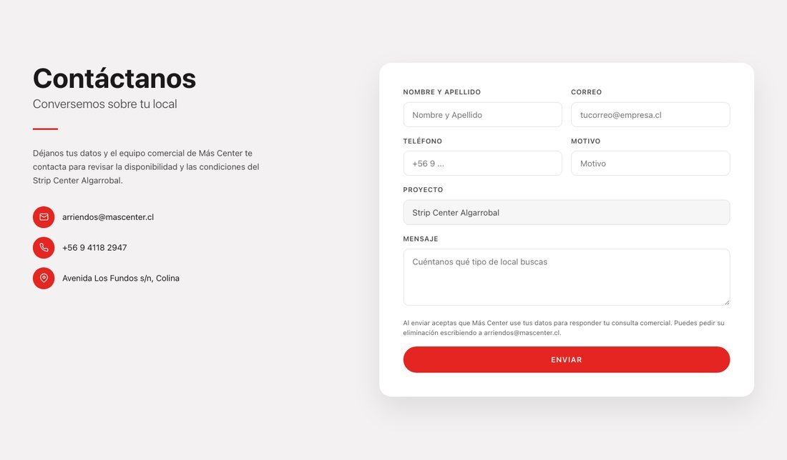
Datos directos a la izquierda (correo, teléfono, dirección) y el formulario de 6 campos a la derecha.
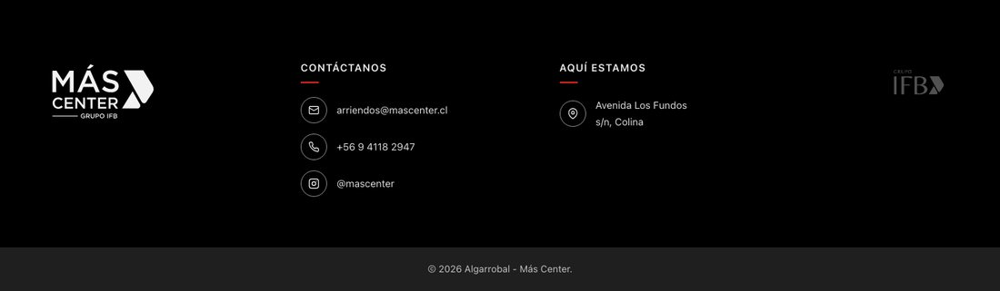
Cuatro columnas: logo Más Center, contacto, dirección y logo Grupo IFB. Trae incluida la barra de copyright que va justo debajo.
Los tres botones fijos a la derecha (correo, mapa, WhatsApp) y la ventana negra donde se reproduce el video de 62 segundos.
.flotante y
configura el plugin con los mismos tres enlaces.Y al final de todo: un último bloque de HTML
personalizado con secciones/99-scripts.html.
El master pesa 292 MB. Eso no puede ir en una web. Ya está resuelto: viene cortado en dos y comprimido. No hay que reconvertir nada.
| Archivo | Qué es | Formato | Peso | Dónde se usa |
|---|---|---|---|---|
algarrobal-hero-loop.mp4 |
14 s del tramo cinematográfico, sin audio, recortado arriba para sacarle la banda de subtítulos quemados | MP4 H.264 1600×776 · 30 fps |
1,8 MB | Fondo del hero, en bucle |
algarrobal-video-completo.mp4 |
Los 62 s íntegros, con locución y subtítulos | MP4 H.264 + AAC 1600×900 · 30 fps |
12,2 MB | Se abre en la ventana del botón «Ver el video del proyecto» |
hero-poster.jpg |
Primer fotograma del bucle | JPG 1600×776 | 198 KB | Imagen de carga y reemplazo del video en celular |
poster ni el playsinline. Sin
playsinline, Safari en iPhone abre el video a pantalla completa solo.Es lo único del paquete que queda a medio camino, y es a propósito: el envío depende del correo y de los plugins del WordPress de ustedes.
Los campos están calcados de los del formulario de Pirque Nogales Poniente, para que puedas duplicar ese mismo formulario de Contact Form 7 en vez de armar uno nuevo:
| Campo en pantalla | name | Tipo | Obligatorio |
|---|---|---|---|
| Nombre y apellido | nombre | texto | Sí |
| Correo | email | correo (valida formato) | Sí |
| Teléfono | telefono | teléfono | Sí |
| Motivo | motivo | texto | Sí |
| Proyecto | proyecto | solo lectura, valor fijo Strip Center Algarrobal | — |
| Mensaje | mensaje | área de texto | Sí |
Strip Center Algarrobal.14-formulario.html, reemplaza todo el bloque
<form class="formulario">…</form> por el shortcode
[contact-form-7 id="XXX"].formulario en el <form> que genera CF7 —se
configura en Additional Settings, o envolviéndolo en un
<div class="formulario">—. El CSS ya está escrito apuntando a
form.formulario input, textarea, select, así que los campos de CF7 se van a ver
exactamente igual sin tocar nada más.El texto legal bajo el formulario («Al enviar aceptas que Más Center use tus datos…») tiene que quedar visible. No lo saques por espacio.
Esto no va en el HTML: lo maneja el plugin de SEO y el personalizador del tema.
| Dónde | Qué poner |
|---|---|
| Título SEO (Yoast / Rank Math) |
Strip Center Algarrobal — Más Center | Colina |
| Meta descripción | Nuevo strip center sobre la Autopista Los Libertadores, en Colina. 15.446 m² de terreno, anclado por Unimarc y Farmacia Cruz Verde. Locales comerciales disponibles. |
| Imagen para compartir (Open Graph) |
video/hero-poster.jpg |
| Favicon (Personalizar → Identidad del sitio) |
logos/favicon.png — 512×512 |
| Idioma de la página | es-CL |
Por si hay que crear algo nuevo después. Los colores están medidos sobre el PDF de la diseñadora y cruzados con el CSS del sitio de Más Center en vivo.
#E52521#C81E1A#8B1623#631513#DADADA#D2D2D3#F3F1F1#000000Tipografía: Poppins, en cinco pesos — 300 Light, 400 Regular, 500 Medium, 600 SemiBold y 700 Bold. Es la del PDF y la misma que carga el sitio de Pirque. Va auto-hospedada para no depender de Google Fonts.
Si el tema ya carga Poppins en esos cinco pesos, puedes borrar el bloque @font-face
del principio de 00-estilos-base.html y la página se ve igual. Si carga solo tres
pesos, no lo borres: los títulos Light y los botones SemiBold cambian de forma.
La página se revisó en 1440, 1024 y 390 px de ancho, sin desborde horizontal y sin errores de consola. Lo que hay que volver a mirar es lo que cambia al montarla en WordPress.
Cuatro cosas que no dependen de quien maquetea, pero que conviene resolver antes de mandarle el enlace al cliente.
?q=latitud,longitud.algarrobal.mascenter.cl, igual que
pirquenogalesponiente.mascenter.cl.Datos que quedaron escritos en la página: arriendos@mascenter.cl · +56 9 4118 2947 (mismo número para WhatsApp) · @mascenter · Avenida Los Fundos s/n, Colina. Si alguno cambia, están en las secciones 14, 15 y 16.
Landing del Strip Center Algarrobal · Más Center — Grupo IFB · entregada el 28-08-2026.
Diseño original: PDF LANDING_ALGARROBAL_CORREGIDO. Cualquier duda de maquetación,
la respuesta está en sitio-completo.html.